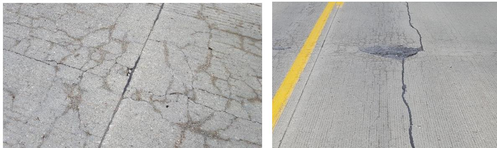
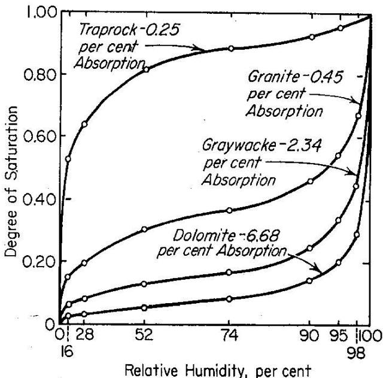
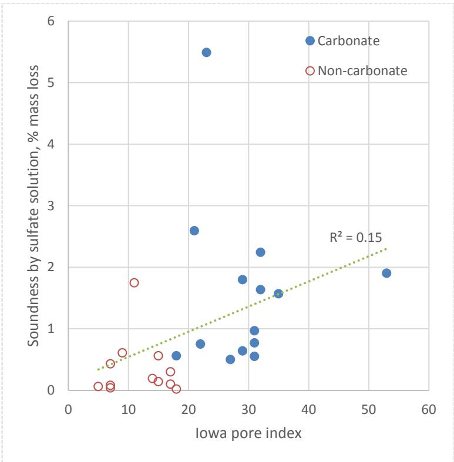
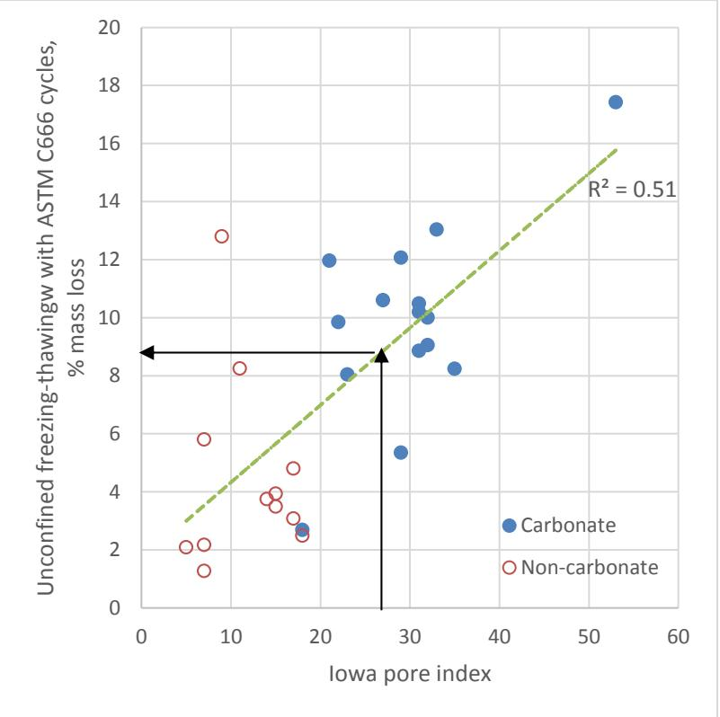
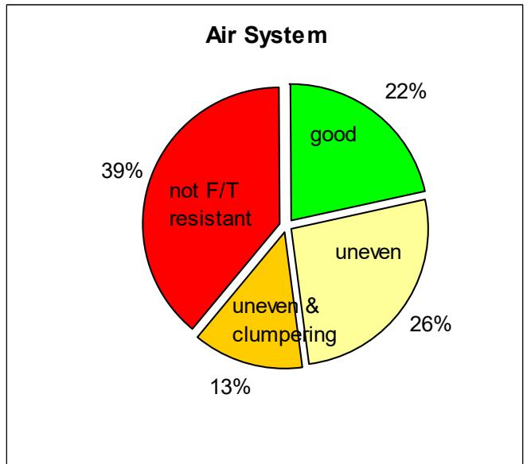
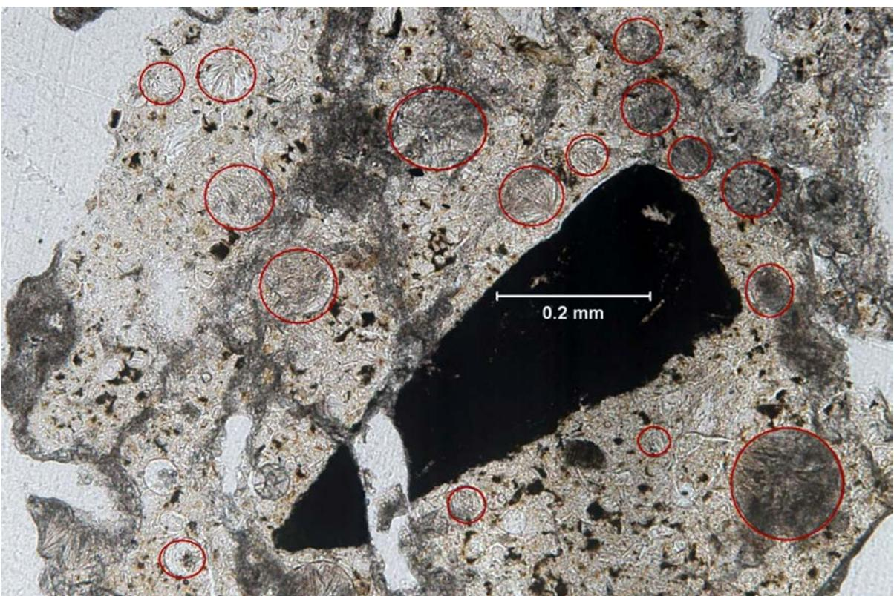
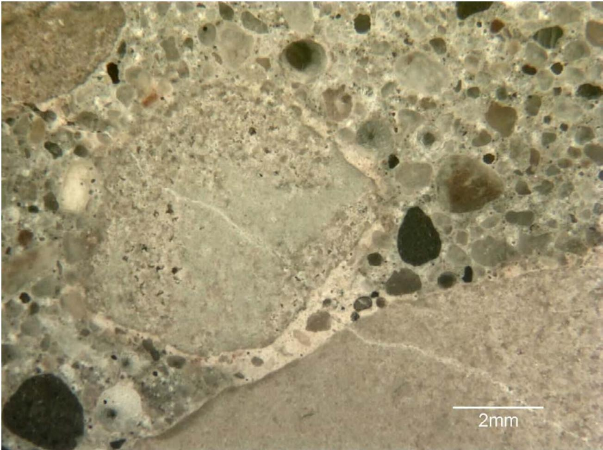
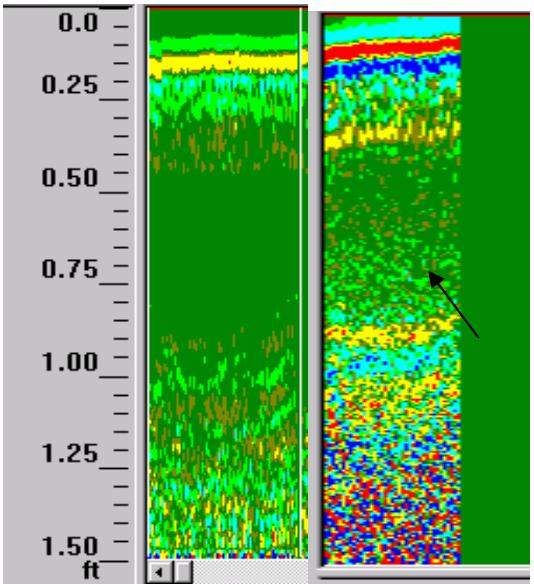

Materials-Related Distress (MRD)
Materials-Related Distress (MRD) is categorized under Durability & Materials-Related Distress because it typically manifests as a durability issue rather than a strength problem [1]. Concrete pavement failures classified as MRD are a direct result of the properties of the materials and their interaction with the environment, originating from inherent material properties or mix design flaws—such as inadequate freeze-thaw resistance, alkali-silica reaction (ASR), or sulfate attack susceptibility—rather than external traffic loads [7]. MRD is differentiated from failures caused by inadequate design for traffic/environmental loading or improper construction practices. [1] These children differ primarily in their triggering mechanisms, ranging from internal chemical expansions like Alkali-Silica Reaction and Sulfate Attack to physical freeze-thaw stresses causing D-Cracking or Ettringite Fill. [2] While the former two involve deleterious reactions with cement paste components, the latter three are driven by moisture ingress and temperature cycling that compromise air void systems or susceptible aggregates. [2], [3] Premature Joint Deterioration serves as a broader observational category often resulting from these specific material failures concentrating at pavement joints. [2] Consequently, mitigating MRD requires prioritizing durability in the concrete mix design and selecting appropriate materials to address these specific chemical and physical vulnerabilities [4].
Sources (14)
Sub-concepts (5)
Overview of Material-Related Distress (MRD)
Map-shaped or web-shaped cracking patterns serve as characteristic indicators of material durability issues, such as D-cracking and ASR, and are frequently observed at transverse joints and within mid-slab wheel paths [4]. Regarding mass loss during scaling tests, bridge deck cores consistently lost more mass than pavement cores, which indicates structural or environmental differences in deterioration susceptibility [5]. Furthermore, scaling mass loss values exceeding 1.5 lbs/yd² were observed only in cores containing a cementitious component composed of portland cement, 20% slag, and 6% silica fume [5].

Materials-related distresses on Pottawattamie County L-66, November 2016 [4]Distress is almost always a combination of marginal factors rather than a single bad parameter.
D-cracking is quantified using a manual rating scale from 1 to 5, where a rating of 1 indicates some evidence at joints but no maintenance required, and a rating of 5 signifies severe deterioration requiring regular maintenance or full-depth patching [1].
Alternatively, automated image analysis systems, such as the Roadware Automatic Road Analyzer (ARAN) with its “WiseCrax” software, detect crack length, width, orientation, and area to classify cracks by type, extent, and severity for generating summary statistics and crack maps [1].
Mechanisms of Aggregate and Paste Deterioration
Mechanisms of durability related to moisture damage (MRD) are categorized into aggregate-related and paste-related distress. Aggregate-related MRD involves the failure of coarse aggregate particles due to freeze-thaw susceptibility, such as D-cracking, which is typically identified at the base of the slab with fractures through aggregate particles; this aggregate durability is rated by class (Class 2, Class 3, etc.). Aggregate freeze-thaw durability is critically dependent on reaching a specific critical saturation threshold, identified as 91.7%, which allows internal ice pressure to exceed the tensile strength of the particle, a state most readily achieved in intermediate-permeability aggregates containing significant volumes of small pores (≤500 nanometers) that trap water during freezing cycles [6]. Furthermore, D-cracking susceptibility in carbonate aggregates is exacerbated by the presence of deicing salts, which interact with the mineralogy to accelerate deterioration mechanisms beyond those caused by freeze-thaw cycles alone; this salt-susceptibility is a distinct failure mode for sedimentary rocks like limestone and dolomite compared to igneous or metamorphic sources [6]. Conversely, paste-related MRD features distress concentrated in the cement paste fraction, where fractures at the aggregate/paste boundary may extend into the paste while aggregate fractures terminate at the boundary, potentially relating to construction problems or early-age desiccation.

Reprinted, with permission from “Influence of Physical Characteristics of Aggregates on Frost Resistance of Concrete.” Proceedings of the American Society for Testing Materials, 60, 1063–1079, copyright ASTM International, 100 Barr Harbor Drive, West Conshohocken, PA 19428. Figure 2.2. Degree of Saturation Attained by Different Aggregates at Various Humidities [6]D-Cracking is classified as a Materials-Related Distress because it originates from the freeze-thaw durability failure of specific coarse aggregate sources rather than structural overload or traffic wear [8]. Laboratory testing has provided strong evidence that the source of coarse aggregate is critical in the development of this distress, whereas factors such as cement source and air entrainment levels within specified ranges are of minor or no importance [8]. Consequently, identifying vulnerable aggregate gradations through freeze-thaw testing is essential for predicting D-cracking potential and mitigating premature materials-related failures in concrete pavements [8].
Paste-related issues can be driven by specific material interactions, such as when blast furnace slag coarse aggregate enters a mix in a dry, absorptive state, depriving adjacent cement particles of water needed for hydration and compromising both strength and porosity; this is mitigated by diligently wetting stockpiles prior to batching to ensure the aggregate pores are fully saturated during mixing [3]. Additionally, compatibility issues between mineral and chemical admixtures can create unstable air void systems in freshly mixed concrete, particularly when supplementary cementing materials (SCMs) are combined with certain chemical admixtures [7]. Such air void system instability, characterized by clustering or coalescing of bubbles, is frequently linked to incompatibilities between absorptive aggregates and air-entraining agents, requiring synthetic or non-vinsol agents and strict adherence to minimum mixing times, with the spacing factor serving as a critical metric for freeze-thaw resistance where values of 0.008 inches or less indicate adequate protection [3]. Finally, the densified paste region, characterized by unhydrated cement grains adjacent to slag particles, requires study to determine its specific effect on observed deterioration mechanisms [8].
 Entrained air in the concrete vs. spacing factor [3]
Entrained air in the concrete vs. spacing factor [3]
Materials-Related Distress encompasses Ettringite Fill as a specific chemical expansion mechanism where delayed ettringite formation causes internal pressure and concrete cracking. This process is characterized by secondary ettringite filling fine air voids within the distressed paste zone [2]. The resulting expansive forces contribute to microcracking that can intersect previously filled void spaces, leading to progressive damage such as spalling along joints [2].
The durability of concrete is influenced by several critical factors, including the use of marginal or slowly D-cracking aggregates which are susceptible to freeze-thaw cycling.
Low-permeability aggregates with a porosity of 0.3 percent or less are classified as strong enough to absorb stress resulting from freezing water within their elastic limit, whereas high micropore volumes correlate strongly with poor freezing-thawing performance [9].
 Relationship between micropores and Iowa pore index [9]
Relationship between micropores and Iowa pore index [9]
To assess these risks, the Iowa pore index test has been utilized for decades by state transportation departments; this test employs 1/2 to 3/4 inch aggregate particles to determine D-cracking potential through measurements of pore structure characteristics [9].

ASTM C88 versus Iowa pore index [9]Performance testing further distinguishes between carbonate and non-carbonate aggregates, with general findings indicating that non-carbonate aggregates perform better than carbonate aggregates under freezing-thawing conditions [9].

Unconfined freezing-thawing test using ASTM C666 conditioning versus Iowa pore index [9]Air void system testing performed below a depth of 75 mm (3”) from the top of the sample may reveal systems that are inconsistent with current technology for freeze-thaw resistance [3].

Air system quality of pavements studied [3]In other material assessments, the Friction Number for pavement surfaces typically ranges between 40 and 70, where higher numbers represent better friction values [1].
calorimetry curves utilizing the 20 percent fraction method can effectively predict initial set times, showing a strong correlation with measurements obtained via p-wave propagation techniques [10].
 Relationship of initial set derived from calorimetry fraction method and UPV [10]
Relationship of initial set derived from calorimetry fraction method and UPV [10]
D-cracking mechanisms involve hydraulic pressure fracturing susceptible aggregate particles from internal freezing water, followed by pressure exerted on surrounding cement paste by expelled water that may cause additional cracking [9].
 Fraying after freezing-thawing cycles in the CSA A23.2-24A test (1/2 inch aggregate particles) [9]
Fraying after freezing-thawing cycles in the CSA A23.2-24A test (1/2 inch aggregate particles) [9]
Alkali-Silica Reaction is classified as a Materials-Related Distress because it originates from an internal chemical reaction between alkalis in the cement paste and reactive silica minerals within the aggregate [12]. This process involves hydroxyl ions reacting with siliceous rocks and minerals, such as opal or chert, to form an expanding gel that can fracture the surrounding concrete [12].
Chemical Attacks and Joint-Related Distress
In Southeast Michigan pavements, ASR or alkali-carbonate reactions causing expansive cracking are primarily driven by highly reactive chert in the fine aggregate, which remains prevalent in local sand sources and necessitates mitigation through low-alkali cements or supplementary cementitious materials (SCMs) such as Class F fly ash, GGBFS, and silica fume [3]. Because the total alkali loading in the system determines reactivity severity, ternary concrete mixes are often required to achieve sufficient SCM content without relying on high volumes of a single additive [3]. Multiple deterioration mechanisms, including ASR, ettringite formation from sulfate attack, and freeze-thaw deterioration, often coexist within a single pavement section, making it difficult to isolate the initiating cause of distress; for instance, some core samples have exhibited surface cracking alongside ASR-filled cracks, ettringite-filled air voids, and air void clustering simultaneously [3]. Additionally, skewed joint layouts can lead to corner cracks that extend into longitudinal cracks due to curling and warping stresses [4].
 ASR filled cracks and rims [3]
ASR filled cracks and rims [3]
Sulfate attack is classified as a Materials-Related Distress mechanism characterized by expansive ettringite formation [3]. This chemical deterioration occurs when external sulfates react with calcium hydroxide and hydrated cement phases to produce these expansive compounds. Consequently, sulfate attack resistance is identified as a key durability characteristic that must be investigated for concrete pavements [7].
Joint distress can manifest as shadowing or microcracking near the joint face due to saturated conditions and marginal air void systems, which is often exacerbated by deicer solutions infiltrating through poorly bonded sealants [2]. Joint sealant debonding allows deicer-laden solutions to continuously saturate joint faces, creating conditions where secondary ettringite formation occurs even without prior distress, progressively compromising air void systems [2]. Specifically, secondary ettringite formation from deicer sulfate sources can infill air voids within 10-20mm of joint planes, reducing entrained volume and increasing spacing factors to levels that compromise freeze-thaw resistance [2]. Furthermore, chemical attack by non-chloride deicers can cause anastomosing microcracking within the paste near joint surfaces, characterized by a lighter, tannish coloration due to bi-carbonation and leaching of the ferrite phase [2]. This is often accompanied by tunneling distress, which involves oval-shaped paste loss extending up to 22mm in width and 90mm depth from joints, frequently alongside lateral microcracking that indicates progressive deterioration mechanisms [2].

FG1 DESCRIPTION: Secondary ettringite and calcite fills fine air voidspaces (outlined in red) in thin section of the altered and highly distressed paste directly adjacent to the joint crack at below approx. 75mm depth in the core. 100x [2]Materials-Related Distress encompasses premature joint deterioration as a specific failure mode where joint sealant degradation or loss occurs significantly earlier than predicted by standard durability models. This manifestation is characterized by issues such as intermittent de-bonding of sealants and significant vertical spalling along the joint crack [2]. Such distress may be difficult to detect through visual inspection alone, indicating that symptoms can exist even when surface indicators are not readily evident [1].
Aggressive salting via deicing salts can accelerate both freeze-thaw damage and chemical attack.
Detection Methods: Petrography and Visual Inspection
Current standard practice involves the petrographic examination of core sections per ASTM C 856, a process that is time-consuming and semi-quantitative. While Ground Penetrating Radar was evaluated as a faster, nondestructive alternative in Phase 1 and Phase 2 studies, it showed success for aggregate-related MRD but had limitations for paste-related distress. Regarding detection, surface-level detection via Pavement Profile Scanner is effective when visual distress is present, but it cannot diagnose the underlying cause [11]. Ultimately, neither GPR nor PPS can diagnose MRD as both detect symptoms only, meaning coring and petrography remain necessary for definitive diagnosis [11].
Visual inspection via the Pavement Profile Scanner can be integrated with downward imaging systems using dual line-scan cameras to capture high-resolution pavement images [11]. Data from these visual inspection systems is processed using specialized software packages such as Roadview 3D to locate and evaluate the severity of surface features [11]. Furthermore, petrographic examination revealed that retempering evidence and higher-than-expected water-cementitious material ratios were present in sites exhibiting scaling, suggesting construction practices significantly influence durability outcomes [5].
 Example of retempering noted via petrographic examination [5]
Example of retempering noted via petrographic examination [5]
Detection Methods: Ground Penetrating Radar (GPR)
- GPR detects aggregate-related MRD via moisture gradients at the base of the slab. Detected at US 63 (extensive) and Hwy 146 (moderate), confirmed by cores. [11]
- GPR fails when moisture masks the signal in severely cracked pavement (P 73). Moisture conditions in cracked concrete are the most probable explanation for false negatives. [11]
Phase 1 trials demonstrated that GPR could identify aggregate-induced cracking, such as frost attack or durability cracking, even when surface symptoms like staining were not readily visible. [1]

Core 3: note discolored paste adjacent to coarse aggregate particle. The crack in the aggregate particle near the middle of the image suggests the presence of some ASR. [1]GPR detection of MRD relies on identifying subtle moisture gradients within the pavement slab, which manifest as minor signal variations rather than distinct reflections. [11]

Possible detection of moisture gradients due to ASR expansion [11]The efficacy of GPR surveys is influenced by operational parameters such as vehicle speed and antenna coupling; slower speeds generally improve detection capability, while closer antenna-to-ground contact enhances signal quality. [11]
Phase 2 trials utilized ground-coupled GPR antennas with center frequencies ranging from 400 to 1500 MHz across three different systems. [11]
Material Selection and Mix Design Strategies
In the development of advanced materials, performance-based specifications for cementitious materials are being developed to differentiate their influence on fresh properties like slump and air void characteristics from hardened properties such as strength and abrasion resistance, moving beyond traditional classification by fineness and chemical composition [7]. For instance, cement containing titanium dioxide acts as a photocatalyst to remove polluting volatile organic compounds (VOCs) from the atmosphere, converting them to carbon dioxide in an effort to reduce urban smog [7]. Regarding durability, concrete containing slag cement can exhibit poor scaling resistance when the slag dosage exceeds 50% of the total cementitious material, a concern primarily based on laboratory tests that often disagree with field observations [5]. Additionally, internal curing using lightweight fines is increasingly recognized to eliminate autogenous shrinkage and self-desiccation in low water-cement ratio mixtures, resulting in more complete hydration of cementitious materials and a less permeable, stronger pavement [7]. Similarly, self-curing concrete utilizes compounds that rise to the finished surface to seal against evaporation, reducing dependence on contractor-applied curing measures while ensuring more complete hydration of cementitious materials [7].
Aggregate and mixture design also play critical roles in pavement longevity. The physical properties of carbonate aggregates can be assessed using a quadrant system based on specific gravity and absorption; specifically, a combination of high specific gravity (>2.60) and low absorption (<1.75%) correlates with a low SPI value, indicating superior freeze-thaw durability potential [6]. To study these interactions, the LTPP SPS-2 program evaluated two distinct PCC mixtures with target flexural strengths of 550 lb/in² and 900 lb/in² at 28 days to isolate the influence of mixture properties on long-term pavement performance [12]. This experimental design allowed for a direct comparison of how different strength targets correlate with durability distresses such as joint deterioration, map cracking, and spalling across multiple climatic regions [12].
 Results of the Iowa Pore Index Test—Secondary Pore Index [6]
Results of the Iowa Pore Index Test—Secondary Pore Index [6]
When air content is below 5%, there is inadequate freeze-thaw protection, and a water to cement ratio (w/cm) above 0.4 results in increased permeability.
Concrete mixtures with high Super Air Meter (SAM) values may exhibit air void structures characterized by lower specific surface and higher spacing factors, which correlate with inadequate freeze-thaw resistance despite meeting minimum air content thresholds [10].
 F-T durability results [10]
F-T durability results [10]
Reactivity Testing and Mitigation Protocols
The Iowa pore index test provides a rapid screening method for aggregate durability by quantifying the volume of large pores (0.1–100 µm) via the Pore Pressure Index (PPI) and small pores (0.01–1 µm) via the Specific Pore Index (SPI), where a high SPI value indicates a greater proportion of fine pores that retain water, acting as a primary driver of freeze-thaw damage in susceptible aggregates [6]. To address durability characteristics including freeze-thaw durability, ASR resistance, sulfate attack resistance, and steel corrosion potential, accelerated testing methods are being developed to predict the probability that a given concrete mix will last for its intended design life [7]. Within the Performance Engineered Mixtures (PEM) framework, the PEM testing protocol utilizes ASTM C457 to characterize the air-void system of concrete cores, providing quantitative data on spacing factors and marginal air content that correlate with freeze-thaw resistance; this standardized petrographic analysis is a critical component for validating mixture durability against field performance [12].
 Results of the Iowa Pore Index Test—Primary Pore Index [6]
Results of the Iowa Pore Index Test—Primary Pore Index [6]
Regarding chemical reactivity and mitigation, the Nebraska Department of Roads utilizes ASTM C 1260 and C 1293 testing protocols to quantify aggregate reactivity levels and evaluate the ASR potential of various aggregates when combined with different cement types, fly ashes (Class C and F), granular blast furnace slag, and calcined clay [8]. In these contexts, Class F fly ash has been identified as a potential mitigator for durability issues in concrete containing slag coarse aggregates, whereas Class C fly ash may have an adverse impact on such mixes [8]. Furthermore, the hypothesis regarding calcium sulfide dissolution in concrete is tested by investigating its relationship with ASR in chert constituents and how cement properties and total alkalinity influence the process [8]. To manage existing issues, lithium saturation and pressure injection treatments are employed to stabilize or reduce existing alkali-silica reaction distress in aged concrete, aiming to produce revitalized, ASR-stable pavement without the need for traditional repair or replacement operations [8].
Monitoring hydration processes involves analyzing heat indexes derived from the first derivative of the calorimeter curve and the area under the curve, which can characterize mortar features and predict early-age strength up to two days; when incorporated with the HIPERPAV computer program, these results provide insight into the risk of thermal cracking in field concrete [13]. Additionally, the semi-adiabatic temperature curve’s first derivative maximum correlates to final set, while its second derivative maximum correlates to initial set, allowing for the estimation of sawing and finishing times based on the concrete hardening process influenced by hydration and environmental conditions [13].
 Effect of curing temperature on heat of hydration (Type I cement) [13]
Effect of curing temperature on heat of hydration (Type I cement) [13]
Overlay Construction and Performance Considerations
PCC overlays are unsuitable for pavements exhibiting existing materials-related distress, as underlying material failures will continue to cause surface deterioration regardless of the overlay mix design [14]. Furthermore, poor drainage conditions, such as water sitting underneath the underlying concrete slab, can contribute to early-age cracking and joint deterioration in overlays [4]. To mitigate certain issues, geotextile bond breakers, such as HATE B 500-PP and Tencate Mirafi 1450 BB, are installed using a nailing pattern of approximately 5.25-foot transverse by 5-foot longitudinal spacing to secure the fabric to existing pavement surfaces prior to overlay placement [14].
 Nailing pattern for the geotextile materials to the existing pavement [14]
Nailing pattern for the geotextile materials to the existing pavement [14]
The performance of these overlays can be further enhanced through specific material and monitoring techniques. The presence of structural macrofibers in concrete overlays increases fatigue capacity and fracture toughness while helping to control differential slab movement caused by curling and warping [4]. Additionally, maturity measurements enable rapid strength development, allowing joint sawing within five to nine hours after construction and temporary traffic access restoration as early as 24 hours post-paving [14].
Connection to Existing Wiki
- D-Cracking — A form of aggregate-related MRD
- Freeze-Thaw Durability — Primary mechanism for aggregate-related MRD
- Premature Joint Deterioration — Multi-factorial distress with mechanistic overlaps
- Ettringite Fill — Secondary mechanism in joint-related MRD
- Pavement Profile Scanner — Visual inspection technology evaluated for surface distress detection
- Schlorholtz 2005 — Phase 2 GPR and PPS Trials — Key Phase 2 source
- Durability & Materials-Related Distress
- Alkali-Silica Reaction
- Sulfate Attack
References
- S. Schlorholtz, B. Dawson, and M. Scott, "Development of In Situ Detection Methods for Materials-Related Distress (MRD) in Concrete Pavements: Phase 1," Center for Portland Cement Concrete Pavement Technology, Iowa State University, Ames, IA, Rep. CTRE 00-96, 2003. [Online]. Available: https://www.intrans.iastate.edu/wp-content/uploads/2018/03/mrd.pdf
- P. Taylor, L. Sutter, and J. Weiss, "Investigation of Deterioration of Joints in Concrete Pavements," National Concrete Pavement Technology Center, Ames, IA, Rep. TPF-5(224), 2012. [Online]. Available: https://www.intrans.iastate.edu/wp-content/uploads/2018/03/joint_deterioration_penetrating_sealers_field_study_w_cvr.pdf
- J. Grove, F. Bektas, and H. Gieselman, "Southeast Michigan Local Road Concrete Pavement Durability Study," National Concrete Pavement Technology Center, Ames, IA, 2006. [Online]. Available: https://www.cptechcenter.org/wp-content/uploads/2018/03/mi_pavement_durability.pdf
- J. Gross, D. King, D. Harrington, H. Ceylan, Y. A. Chen, S. Kim, P. Taylor, and O. Kaya, "Concrete Overlay Performance on Iowa's Roadways (Field Data Report)," National Concrete Pavement Technology Center, Ames, IA, Rep. TR-698, 2017. [Online]. Available: https://www.intrans.iastate.edu/wp-content/uploads/2017/09/Iowa_concrete_overlay_performance_w_cvr.pdf
- S. Schlorholtz and R. D. Hooton, "Deicer Scaling Resistance ... Containing Slag Cement, Phase 1: Site Selection and Analysis of Field Cores," National Concrete Pavement Technology Center, Ames, IA, Rep. TPF-5(100), 2008. [Online]. Available: https://www.cptechcenter.org/wp-content/uploads/2018/03/schlorholtz_deicing_phase1.pdf
- F. Bektas, K. Wang, and J. Ren, "Carbonate Aggregate in Concrete," Institute for Transportation, Ames, IA, 2015. [Online]. Available: https://www.intrans.iastate.edu/wp-content/uploads/2018/03/201514.pdf
- D. Harrington, R. Rasmussen, D. Merritt, T. Cackler, and P. Taylor, "Long-Term Plan for Concrete Pavement Research and Technology—The Concrete Pavement Road Map (Second Generation): Volume II, Tracks (FHWA-HRT-11-070)," National Center for Concrete Pavement Technology, Iowa State University, Ames, IA, 2012. [Online]. Available: https://www.fhwa.dot.gov/publications/research/infrastructure/pavements/pccp/11070/11070.pdf
- J. Grove, G. Fick, T. Rupnow, and F. Bektas, "Material and Construction Optimization for Prevention of Premature Pavement Distress in PCC Pavements," National Concrete Pavement Technology Center, Ames, IA, Rep. TPF-5(066), 2008. [Online]. Available: https://www.intrans.iastate.edu/wp-content/uploads/2018/03/mco-final.pdf
- F. Bektas, W. Cai, and K. Wang, "Aggregate Freezing-Thawing Performance Using the Iowa Pore Index," Center for Transportation Research and Education, Ames, IA, 2016. [Online]. Available: https://www.cptechcenter.org/wp-content/uploads/2018/03/aggregate_freezing-thawing_using_Iowa_pore_index_w_cvr.pdf
- X. Wang, P. Taylor, and D. King, "Evaluation of Modified Concrete Mixture Proportions for the City of West Des Moines," National Concrete Pavement Technology Center, Ames, IA, 2016. [Online]. Available: https://www.intrans.iastate.edu/wp-content/uploads/2018/03/WDM_modified_concrete_mixture_proportions_w_cvr.pdf
- S. Schlorholtz, "Development of In Situ Detection Methods for Materials-Related Distress (MRD) in Concrete Pavements: Phase II," Center for Portland Cement Concrete Pavement Technology, Iowa State University, Ames, IA, Rep. HR-1081, 2005. [Online]. Available: https://www.intrans.iastate.edu/wp-content/uploads/2018/03/mrd_phase2.pdf
- J. Gross, J. Weiss, T. Ley, P. Taylor, N. Weitzel, T. Van Dam, G. Smith, and C. Jones, "Performance-Engineered Concrete Paving Mixtures," National Concrete Pavement Technology Center, Iowa State University, Ames, IA, Rep. TPF-5(368), 2022. [Online]. Available: https://www.intrans.iastate.edu/wp-content/uploads/2023/04/performance-engineered_concrete_paving_mixtures_w_cvr.pdf
- K. Wang, Z. Ge, J. Grove, J. M. Ruiz, R. Rasmussen, and T. Ferragut, "Simple and Rapid Test for Monitoring the Heat Evolution of Concrete Mixtures, Phase 2," Center for Transportation Research and Education, Ames, IA, 2007. [Online]. Available: https://www.intrans.iastate.edu/wp-content/uploads/2018/03/calorimeter.pdf
- P. D. Wiegand, J. K. Cable, T. Cackler, and D. Harrington, "Improving Concrete Overlay Construction," National Concrete Pavement Technology Center, Ames, IA, Rep. TR-600, 2010. [Online]. Available: http://publications.iowa.gov/20076/1/IADOT_tr_600_Improving_Concrete_Overlay_Construction_2010.pdf
Feedback on this page